Inamicho, Wakayama: things to do, food and stays
Inamicho · Wakayama
Inamicho
Highlighted on the Wakayama map.
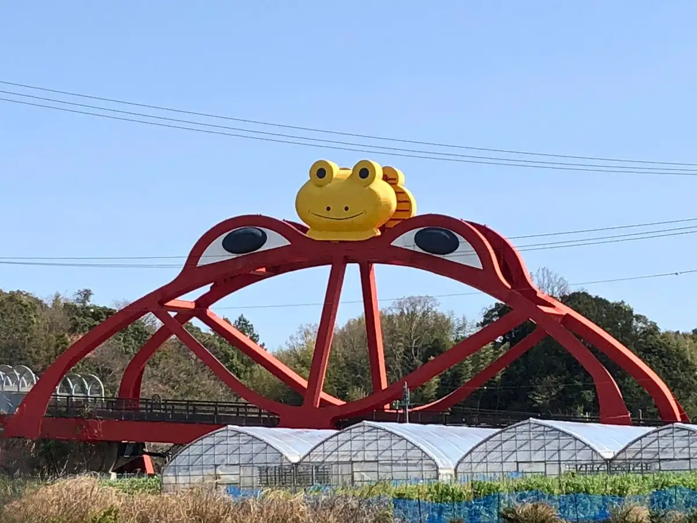
Stay
Plumeria INAMI
Plumeria INAMI
ＭＡＲＩＮＥ－Ｑ
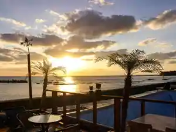
MARINE-Q
Ｐｌｕｍｅｒｉａ ＩＮＡＭＩ
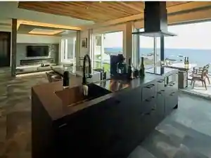
Plumeria INAMI
リブマックスリゾート印南シーフロント
Ribumakkusu Resort Innami Shifuronto
Resort hotel at Zenkyakushitsutennen Onsen in Shimada, Inamicho with open-air baths.
ＭＡＸ ＣＵＢＥ 印南シーフロント
MAX CUBE Innami Shifuronto
Inn in Shimada, Inamicho with a large communal bath.
Dining
花風
Hanafu
コロコロコーヒー
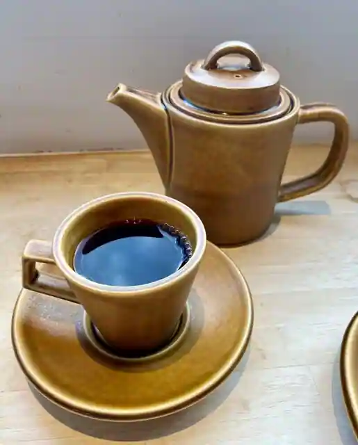
Korokoro Coffee
印南サービスエリア下り線 スナックコーナー・フードコート
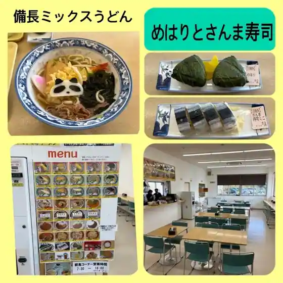
Innami Sabisueria Kudari Sen Sunakkukona Fudokoto
ニコカフェ
Niko Cafe
竹乃屋
Take No Ya
お多福
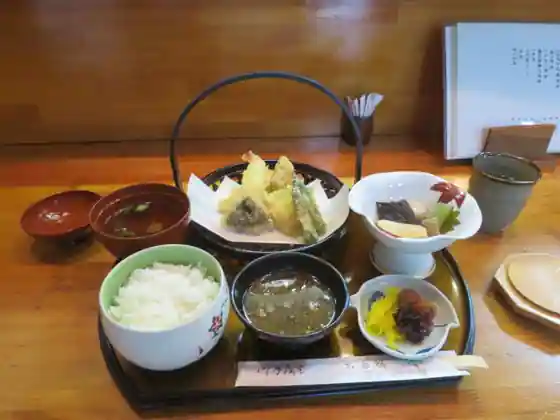
O Tafuku
今又旅館
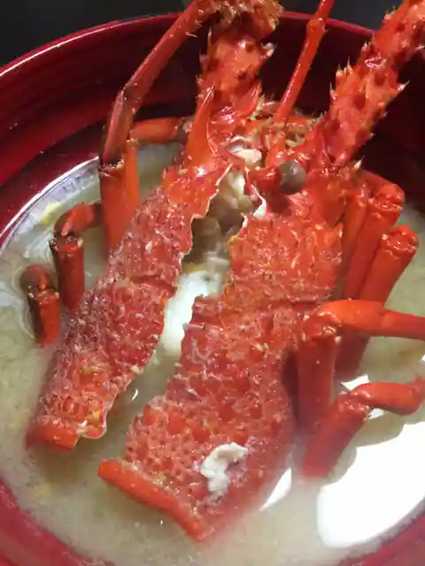
Ima Mata Ryokan
EPOCH
EPOCH
海岸通り
Kaigandori Ri
MARINE-Q
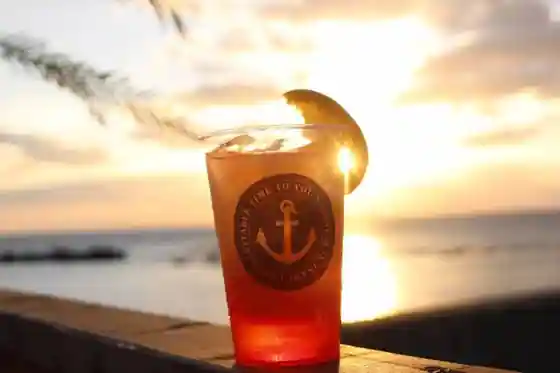
MARINE-Q
紀南カントリークラブ
Kinan Kantorikurabu
ごはんとちょい飲み さんせ
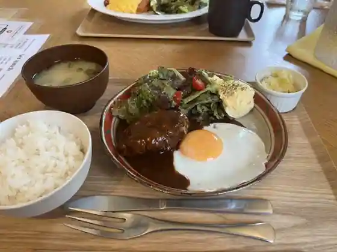
Gohantochoi Nomi Sanse
PIZZERIA POLIGNANO
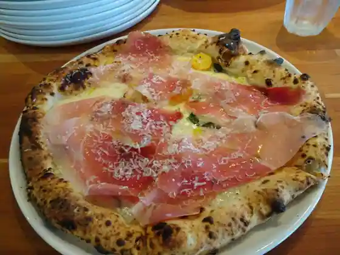
PIZZERIA POLIGNANO
駅前食堂 いなだ
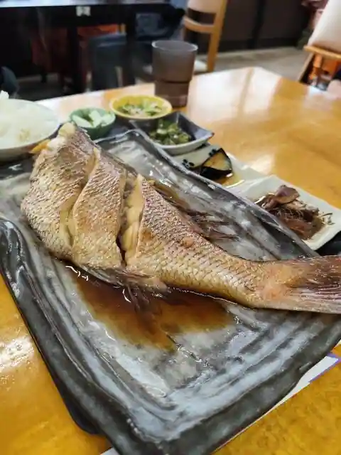
Ekimae Shokudo Inada
ランタン ピザアンドパスタ
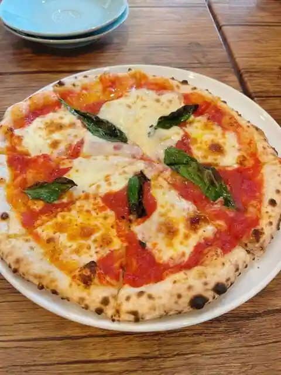
Rantan Pizza Ando Pasta
LiVEMAX RESORT 印南シーフロント
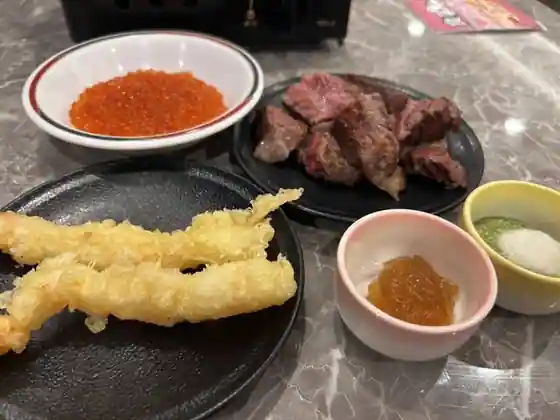
LiVEMAX RESORT Innami Shifuronto
西山蒲鉾店
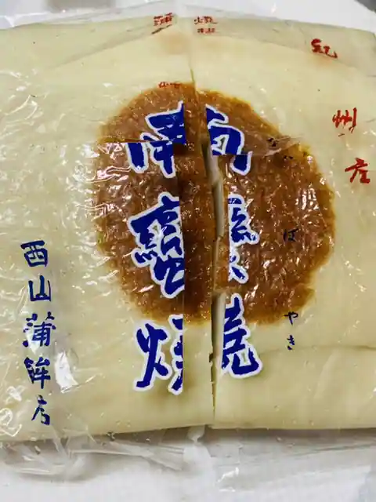
Nishiyama Kamaboko
Sights
Kaeru Hashi